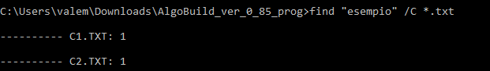
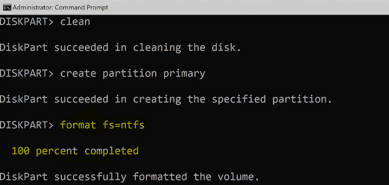
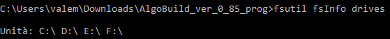
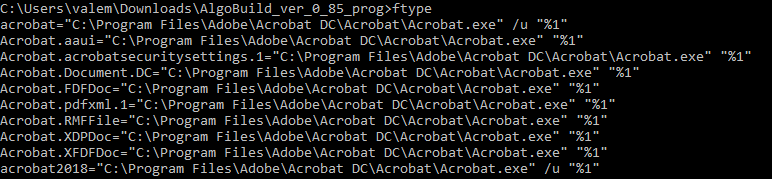

FC
Confronta due file o set di file e ne visualizza le differenze.

FIND
Ricerca una stringa di testo in uno o più file.
 FOR
Esegue un comando specificato per ogni file in un set di file.
FORMAT
Formatta un disco per l'utilizzo con Windows.
 FSUTIL
Visualizza o configura le proprietà del file system.
 FTYPE
Visualizza o modifica i tipi di file utilizzati nelle associazioni delle estensioni di file.
